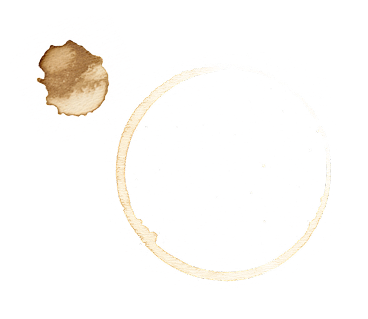
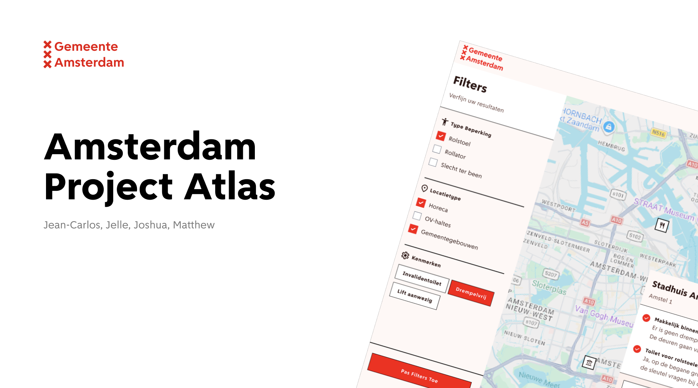

Dit zijn mijn persoonlijke leerdoelen voor de minor Web Design and Development 2026.
Klik op de rechterbladzijde om te bladeren!


Opfrisser en creatieve vrijheid
Sprint 0 was weer even een opfrisser van wat code ook alweer kon en deed en de vrijheid die je ermee hebt t.o.v. Figma.
Mijn mening: Geweldig om meteen in code te beginnen in plaats van alleen maar in Figma te ontwerpen!

Huidig nieuws & Serverside APIs
Bij dit vak heb ik veel geleerd over serverside APIs en hoe je op een veilige manier data opvraagt. Ook kwamen de AI APIs van Google Chrome aan bod. Overal heb ik mega veel geleerd van dit vak wat ik kan meenemen.
// Astro endpoint (src/pages/api/news.js)
export const GET = async () => {
const response = await fetch(`https://newsapi.org/v2/top-headlines?apiKey=${import.meta.env.API_KEY}`);
const data = await response.json();
return new Response(JSON.stringify(data), {
status: 200,
headers: { "Content-Type": "application/json" }
});
};Mijn mening: Serverside APIs zijn essentieel, maar ik vond het experimenteren met de Chrome AI API het leukst!

Chernobyl controlepaneel in CSS
Bij dit vak heb ik zonder javascript een volledig functioneel controlepaneel gemaakt. De uitdaging hier was om javascript functionaliteit na te bootsen in CSS. Bij dit vak heb ik geleerd hoe ver CSS eigenlijk al is ontwikkeld.
:checked + label) om interactieve states bij te houden zonder JS./* State controleren met CSS checkboxes */
#toggle-reactor:checked ~ .control-room {
background-color: #ff3333;
animation: alarm-pulse 1s infinite alternate;
}Mijn mening: CSS is echt mega krachtig; JavaScript is vaak veel minder nodig dan je denkt voor UI-interacties.

Screenreader-optimalisatie voor Roger
Bij dit vak heb ik vooral geleerd dat toegankelijkheid niet een lijstje is die je kan afwerken maar dat je het beste kan testen met de verschillende beperkingen die er zijn.
Mijn mening: Toegankelijkheid testen met echte gebruikers (zoals Roger) opent echt je ogen voor echte barrières.

Robuust NS belastingformulier
Hier was het de opdracht om een zo robuust mogelijk formulier te maken met goeie errorhandeling en duidelijke feedback naar de gebruiker. Ik heb hier vooral geleerd hoe belangrijk het is om een formulier te maken die goed functioneert.
Mijn mening: Progressive enhancement is fantastisch voor robuustheid, al is het soms extra werk om te testen.

Samenwerken & prototype bouwen
Bij de hackathon was het belangrijk om binnen een korte tijd in groepsverband een werkend prototype neer te zetten. Ik heb hier dus vooral geleerd hoe belangrijk het is om goed samen te werken met je team en keuzes te maken samen.
Mijn mening: In een team werken onder tijdsdruk dwingt je echt om gefocust te blijven op de belangrijkste features.
Ik wil leren hoe ik interfaces bouw die voor iedereen bruikbaar zijn, door diep in te zoomen op screenreader-support, toetsenbord-navigatie en het correcte gebruik van ARIA-labels.
Waarom? Toegankelijkheid is een fundamenteel recht; als ontwikkelaar heb ik de verantwoordelijkheid om niemand uit te sluiten.
Ik wil effectief samenwerken met Git (branches, pull requests en code reviews), zodat we veilig en duidelijk kunnen bouwen aan dezelfde codebase.
Waarom? Dit is een essentieel aspect van professionele softwareontwikkeling.
Ik wil complexe CSS animaties en keyframes kunnen ontwerpen, zodat ik interactieve, duidelijke micro-interacties en state-changes kan bouwen.
Waarom? Animaties verbeteren de gebruikerservaring en maken interfaces intuïtiever.
MIJN LEERDOELEN
Dit zijn mijn persoonlijke leerdoelen voor de minor Web Design and Development 2026.
Klik op de rechterbladzijde om te bladeren!

Opdrachtgever & Reflectie
Voor de Gemeente Amsterdam hebben we samen met Jean-Carlos, Joshua en Matthew een toegankelijke atlas gebouwd: een interactieve kaart waarmee bewoners Amsterdamse projecten in hun buurt kunnen ontdekken en filteren.
In ons team pakte ik vanzelf een coördinerende rol — niet als "de baas", maar meer als degene die het overzicht bewaarde: wie werkt waaraan, wat moet er nog, wat blokkeert iemand? Dat voelde natuurlijk aan en het team werkte er goed mee.
Pull requests. We hebben de hele meesterproef nooit een merge-conflict of PR-probleem gehad. Dat klinkt klein, maar dat is het resultaat van consequent branches maken, goede commit messages schrijven en elkaars code écht reviewen voordat je merget. Dat is iets wat ik nu altijd zo ga aanpakken.
Mijn mening: Alles wat ik geleerd heb kwam samen. Trots op hoe soepel de samenwerking liep en dat we iets gebouwd hebben dat echt werkt voor Amsterdammers.
Dit gesprek moet nog plaatsvinden. De reflectie verschijnt hier na het gesprek.
Blik op de toekomst:
Nog in te vullen.
Aan het begin van de minor wilde ik vooral leren hoe het is om aan grotere en meerdere code-projecten te werken. Ik had hiervoor wel wat code-ervaring, maar nog niet heel veel.
Blik op de toekomst:
Mijn focus lag op het leren programmeren in teamverband en het ervaren van een gestructureerde workflow om samen aan één codebase te bouwen.
Het samenwerken en onder druk presteren in een team ging me al heel goed af, bijvoorbeeld tijdens de hackathon. Waar ik toen nog erg tegenaan liep, was het oplossen van merge-conflicten in Git.
Blik op de toekomst:
Ik wilde me richten op het beheersen van Git-tooling om conflicten zelfstandig te kunnen oplossen, zodat we tijdens de Meesterproef een soepele samenwerking konden garanderen.
MEESTERSCHAP
Dit zijn mijn persoonlijke reflecties op de drie Meesterschap Gesprekken voor de minor Web Design and Development 2026.
Klik op de rechterbladzijde om te bladeren!
Gebruik je muis om over de pagina heen te gaan
Nils van Nine Elements betoogt dat moderne tools zoals Figma en Tailwind ervoor hebben gezorgd dat we snel dezelfde lay-outs bouwen, maar dat CSS veel meer kan. Het doel is om met moderne CSS-technieken creatieve, unieke websites te bouwen.
/* Grid met FR units */
.container {
display: grid;
grid-template-columns: 2fr 3fr auto 1fr;
}
/* Steps animatie */
.keyvisual {
animation: stop-motion 3s steps(31, end) infinite;
}Mijn mening: FR-units zijn geweldig voor asymmetrische grids zonder dat het breekt, en steps() voor stop-motion effecten is erg tof.
Toegankelijkheid is geen afvinklijstje; praten met de doelgroep is essentieel. Manuel toonde aan hoe vermoeiend een slecht gestructureerde site is voor screenreader-gebruikers.
Gebruik duidelijke alt-teksten voor informatieve afbeeldingen, of laat ze leeg voor decoratieve afbeeldingen om screenreaders niet onnodig te belasten:
<!-- Informatief -->
<img src="product.jpg" alt="Zwarte laptop">
<!-- Decoratief -->
<img src="line.svg" alt="">Mijn mening: Gebruikerstests met mensen die écht een beperking hebben zijn essentieel. Als persoon zonder beperking kun je je simpelweg niet inleven in hoe zij het web ervaren; richtlijnen alleen zijn dus niet genoeg.
Rosa Lommen sprak over onafhankelijkheid van Big Tech en het belang van controle hebben over je eigen data. Zelf hosten van een static site geeft je de macht terug over je eigen code en privacy.
Respecteer de instellingen van de gebruiker door animaties uit te schakelen als deze hinder kunnen veroorzaken:
@media (prefers-reduced-motion: reduce) {
.header-logo { animation: none; }
}Mijn mening: Ik vind niet dat we per se onafhankelijk moeten worden van Big Tech. Het gemak van platformen zoals GitHub en Vercel is simpelweg te groot en het is prima zoals het nu is.
Robbert Broersma legde uit hoe je formulieren zo makkelijk mogelijk maakt, autocomplete gebruikt en uitleegt waarom je specifieke gegevens nodig hebt om conversie en toegankelijkheid te verhogen.
<div class="form-field">
<label for="name">Naam *</label>
<p id="name-help">Vul je volledige naam in</p>
<input id="name" aria-describedby="name-help" required>
</div>Mijn mening: Mijn grootste frustratie is wanneer je niet fatsoenlijk door een formulier heen kunt tabben, wat bij kleinere websites helaas nog vaak het geval is. Toegankelijke keyboardnavigatie is een absolute must.
Peter Paul Koch (PPK) besprak de geschiedenis van browser engines en hoe ze HTML, CSS en JS verwerken. De rendering engine (Blink, WebKit, Gecko) berekent hoe elementen op het scherm worden getoond, terwijl de JS engine code interpreteert.
<script async src="script.js"></script>
<script defer src="script.js"></script>
<!DOCTYPE html>Mijn mening: Veel developers weten te weinig over hoe verschillende browsers onder de motorkap werken en hoe code bijvoorbeeld in Firefox anders kan renderen dan in Chrome. We moeten meer aandacht besteden aan cross-browser compatibiliteit en performance.
Hans de Zwart legt uit dat privacy draait om contextuele integriteit: er worden geen onverwachte dingen gedeeld met onverwachte partijen.
Belangrijke grondslagen onder de AVG:
Mijn mening: Hoewel de AVG een goed initiatief is en de EU privacy serieus neemt, ligt de echte verantwoordelijkheid bij ons als developers om al bij het ontwerpen 'privacy by design' toe te passen.
Het maturity level framework van Q42 evalueert Figma-bestanden en design tokens om consistentie te garanderen tussen design en development.
:root {
--color-primary: #0066cc;
--spacing-sm: 16px;
--font-size-body: 16px;
}Mijn mening: Ik geloof dat AI een grote rol kan spelen bij het snel en slim opzetten van een geautomatiseerd design system. Dit is zeker een workflow die ik in mijn eigen projecten wil gaan toepassen.
Zorg dat je website functioneel blijft, zelfs als de verbinding wegvalt (bijv. in een lift). Dit kan door middel van PWAs en localStorage.
Gemeenschappelijke herbruikbare componenten bouwen voor gemeenten (bijv. Den Haag). De uitdaging ligt bij het indienen van pull requests en wie de verantwoordelijkheid draagt.
Mijn mening: Eerlijk gezegd vind ik een extreme 'offline-first' insteek in Nederland een beetje overbodig, aangezien we vrijwel overal een stabiele verbinding hebben. De focus kan beter liggen op de uitdagingen rondom grote, gedeelde design systems zoals die van de overheid.
Hoe het web nu vooral in handen is van grote techbedrijven en hoe het meer publiek en democratisch moet worden in plaats van gedomineerd door Big Tech.
Verschillende manieren hoe het web beter moet worden, waaronder meer duurzaamheid, ethiek en digitale toegankelijkheid.
De rol van de gebruiker op het web en hoe we kunnen zorgen dat het web meer inclusief en toegankelijk wordt in plaats van overweldigend te zijn.
Een filosofische ontleding van de betekenis achter elk afzonderlijk woord in "The Web You Want".
Niels toonde fysieke prototypes, waaronder een waardeloze klok vol easter eggs en games op een oscilloscoop met behulp van lasers.
Hoe AI wordt ingezet om toegankelijkheidsproblemen op te lossen. AI moet een aanvulling zijn op onze fysieke beperkingen, en geen excuus voor ontwikkelaars om slechte code te schrijven.
Websites moeten functioneren zonder JavaScript (Progressive Enhancement). Net als een roltrap die als gewone trap werkt als de stroom uitvalt. Daarnaast besprak Cyd de anti-AI trend en plagiaat op portfolio's.
:root { interpolate-size: allow-keywords; }Nostalgie naar het gedecentraliseerde, community-gedreven oude web waarbij sites direct naar elkaar verwezen via webrings zonder dat er centrale zoekmachines nodig waren.
Fysieke apparaten (stofzuigers, vaatwassers) gaan opzettelijk snel kapot, maar het web (HTML, CSS, JS) is gebouwd om backwards compatible te zijn en gaat nooit kapot.
Mijn mening: Nostalgie naar het oude web is leuk, maar we zijn qua User Experience (UX) gelukkig enorm vooruitgegaan. We moeten de goede UX van nu behouden, terwijl we blijven vechten voor de openheid en toegankelijkheid van het web.
Killian Valkhof betoogt dat native CSS-technieken de noodzaak voor zware JavaScript-libraries wegnemen. Door te ontwerpen volgens de Rule of Least Power kies je altijd de minst krachtige, meest robuuste taal voor een taak.
/* Reset standaard input styling */
input { appearance: none; }
/* Exclusieve accordeon zonder JS */
<details name="faq">...</details>Mijn mening: Ik ben het hier helemaal mee eens. CSS is veel robuuster, sneller en zorgt voor schonere code. JavaScript moet wat mij betreft echt de absolute 'last resort' zijn.